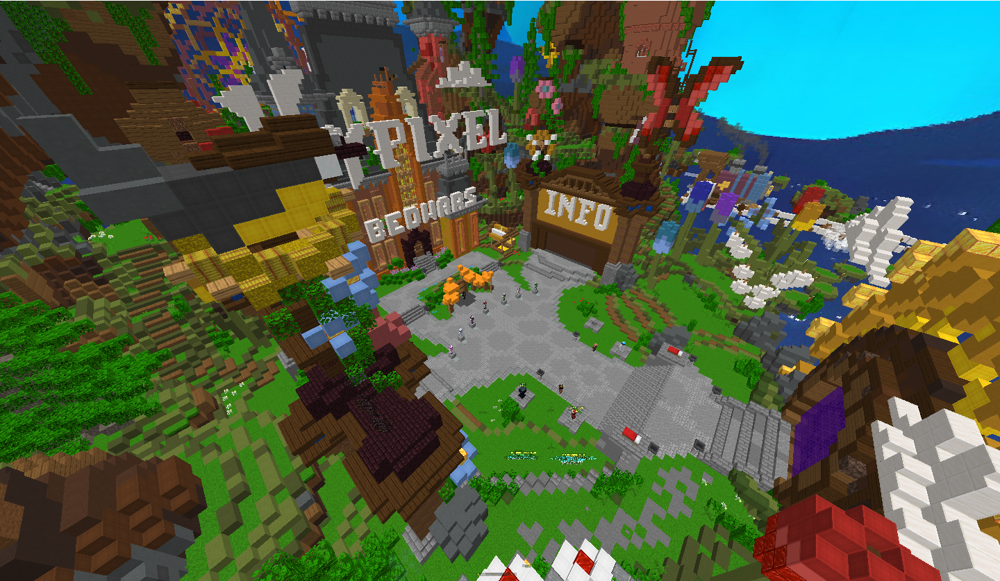
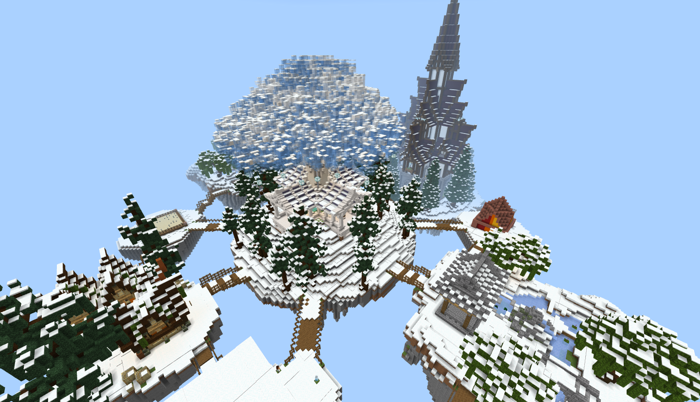

关于服务器
 SKY_GAME 国际基岩版服务器
在SKY_GAME国际基岩版服务器中拥有众多小游戏可游玩.
比如PVP游戏、休闲游戏、原创小游戏以及更多小游戏.
丰富的小游戏可以使你在不同的游戏中体验到不同的乐趣和挑战.
服务器IP:play.simpfun.cn | 服务器端口:12362SKY_GAME 国际Java版服务器
在SKY_GAME国际Java版服务器中可体验到Hypixel起床战争.
比如单人模式、4v4v4v4模式、多种梦幻模式和更多模式！
加入Java版服务器,体验Hypixel起床战争吧！
服务器IP:mcskygame.2m.pub | 服务器端口:25565